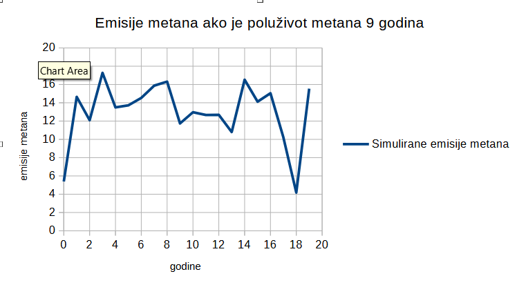

What not to do when spreading libertarianism
The vast majority of the laws we have are unnecessary or even harmful.
The USA has over 80'000 pages of federal regulation, and that arguably
stifles small businesses, and is mostly not the reason why we are living
in such a good time. The reason cars aren't randomly catching fire any
more like they did in the early 20th century is because of the
advancements in engineering, and those had little or nothing to do with
the regulations pushed after the Ford Pinto. The reason why vaccines
today don't cause anything like the Cutter Vaccine Incident in the 1950s
is because today we are using RNA vaccines, which cannot cause an
infection even in theory, rather than because of the government
regulation. The regulation should arguably be massively reduced compared
to status quo. And the government, when trying to solve complicated
societal problems, is mostly in the position of medieval physicians:
politicians have some pre-scientific notions of how society works and
are proposing cures based on that, and almost every cure they are
proposing for complicated problems turns out to either be ineffective or
counter-productive, for the same reason as medieval medicine was just as
likely to harm its patients as it was to help them. The government
should simply stop trying to solve complicated societal problems until
social sciences advance to a lot higher point than they are now.
What is the best way of spreading this message? I wish I knew the answer. But I have a lot of experience with it and I know what not to do:
What is the best way of spreading this message? I wish I knew the answer. But I have a lot of experience with it and I know what not to do:
-
Don't use laws against murder as examples of good laws.
Ask yourself, what are we accomplishing by punishing murderers? Because that's what laws against murder do, they don't prevent murder, they punish it. The police only comes after a psychopath has already murdered somebody, and then they put that psychopath in a prison or a jail. A prison or a jail is not a place from he will return sane, it's a place from which he will return with even more psychological problems. It's obvious how laws against murder might be making things worse, and it's not at all obvious how they might be making things any better.
Doesn't it seem way more probable to you that actually good laws are laws against the misuse of antibiotics in the egg industry, or the laws against open DNS servers?
When trying to address the problem of violent crime, then we are in the position of medieval physicians, much more so than when we are trying to address the problem of superbacteria or open DNS servers. -
Don't say or imply that superbacteria are a very temporary
problem and that lab-grown animal products will soon solve that
problem.
Sorry to burst your bubble, but that's not remotely true. It's true that 80% of antibiotics are being used for farm animals, but that doesn't mean lab-grown animal products will soon solve that problem. Namely, most of those antibiotics are being used in the egg industry. It's hard to tell the exact percentage, but you need to take into account that 45% of all antibiotics we use today are ionophores, which are antibiotics effective in birds but not in mammals. We will not have lab-grown eggs any time soon. We struggle to even produce lab-grown muscle meat, and eggs are far more complicated than muscles. That's why I think dealing with superbacteria is a legitimate role of the government. -
Don't say or imply that the Internet as we know it doesn't rely
on sane government regulation to work.
What do you think would happen if there was no law requiring the ISPs that, if they set up an unencrypted DNS server, they make it respond only to the requests from the IP addresses it is supposed to serve, rather than to all IP addresses? The answer seems obvious to me: some ISPs would set up their DNS servers improperly, and that would make it trivial for the hackers to paralyze the Internet with denial-of-service attacks. DNS servers sometimes respond with long responses to short queries, so all the hackers would need to do to paralyze the Internet in an anarchy is to spoof their IP address and make such short-but-long-response-causing DNS requests. That's called DNS reflection attack.
And in case you think this is a very temporary problem, that Internet will soon naturally switch to DNS-over-HTTPS, I'm sorry to burst your bubble, but the Internet of the near future will be even more vulnerable to such attacks, rather than less. HTTP 3 and other QUIC-based services are not TCP-based, they are UDP-based, so there are no TCP handshakes inherent in them. They have their methods of prevent IP-spoofing attacks, but those take more processing time to implement. In an anarchy, what would force the web-hosting companies that, if they implement HTTP 3 or other QUIC-based services, they implement them properly (check whether the handshake was properly done, check that the session has not expired...)? If they are not implemented properly, the Internet is vulnerable to DNS-reflection-like attacks on steroids. I say "on steroids" because DNS can only respond with 4 UDP packets to one UDP packet, but HTTP 3 can respond with a lot longer responses.
That's why I think making the Internet work with basic regulation is a legitimate role of the government. -
Don't say or imply that COVID lockdowns are the
main reason for the current mental health crisis.
Sorry, that goes against the data about as much as the saying that timely-implemented lockdowns saved millions of lives in Europe in 2020. Lockdowns and suicides are not correlated. In fact, the country that had the highest rise in suicides in 2020, that is Japan, did not have a lockdown. -
Don't say that methane is the most important greenhouse gas and
that factory farming saved us from global warming.
That's both an evil belief and a false belief. The statistics supposedly showing that our methane emissions reached their peak in the 1980s and have been decreasing ever since are simply wrong analyses of the data. They are implicitly assuming methane concentrations in the atmosphere are an IT1-type system with respect to our methane emissions, which it is not. It is an exponential decay system. And this diagram:

This diagram is almost exactly what we would expect if our methane emissions were constant. Here is what our methane emissions might have been, based on a computer simulation:

No discernable trend, right? You can read more about that problem on my blog-post about factory farming counter-apologetics.